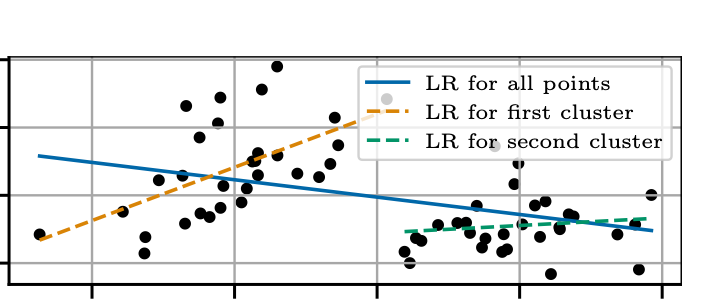
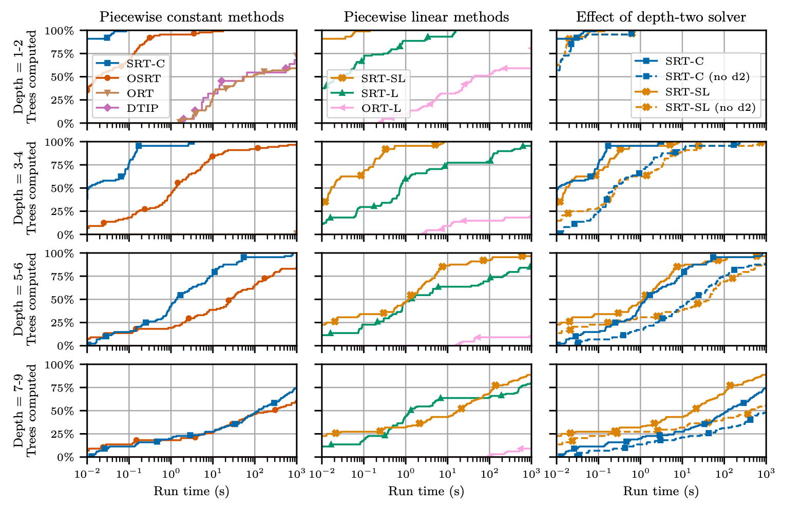

- OSRT より 18 倍速い葉が定数の最適な回帰木で、SRT-C は OSRT より幾何平均で 18 倍速かった。差が最も大きい深さ 3 では 131 倍。
- 最適な区分線形の回帰木葉に重回帰（elastic net）や単回帰（ridge）を置く回帰木を、動的計画法で最適に求める初めての手法。
- 深さ 2 の解法で約 1 桁深さ 2 専用の解法は、SRT-C と SRT-SL の計算時間を平均で 8 分の 1 と 10 分の 1 にした（深さ 3 では 20 分の 1 と 12 分の 1）。
最適な回帰木は MIP では深い木を解けず、動的計画法の OSRT は葉が定数の木に限られていた
回帰木はデータを分けてから回帰モデルを当てはめる点で線形回帰を一般化したものと見なせる（下図）。人が読めるかどうかは木の大きさで決まるので、小さくて誤差の小さい木が欲しい。CART のような貪欲法は速いが、与えられた大きさの中で最良とは限らない。最適な木を MIP、制約プログラミング、MaxSAT で求める手法は、小さなデータと深さ 3 程度を超えると解けないことが多い。
回帰では、Dunn（2018）の MIP が葉が定数の木と葉に線形モデルを置く木の両方を扱うが、Dunn 自身が実用的な規模には対応できないとして局所探索（IAI の実装）を勧めている。動的計画法を回帰に使ったのは OSRT だけで、葉が定数の木しか扱わず、分類の最適な木で進んだ高速化の一部も取り入れていなかった。

深さの上限のもとで、二乗誤差の和に分岐ノードの数の罰則を足した目的を最小にする
木の分岐は前もって二値化した特徴量で行い、葉の線形モデルは元の連続の特徴量で学習する。目的は最大の深さ \(d\) のもとでの二乗誤差の和（SSE）と、分岐ノードの数 \(N(\tau)\) に係数 \(\lambda\)（訓練データの全平方和で正規化）を掛けた罰則の和である。
葉が定数の場合、MurTree の動的計画法を回帰に直すと次の再帰になる。葉では平均 \(\bar y\) を予測して SSE を返し、分岐ごとに \(\lambda\) を足す。実装は STreeD の枠組みの上にある。
二乗誤差を 3 つの和に書き直すと、深さ 2 の木の誤差を特徴量の組ごとの事前計算から求められる
MurTree の深さ 2 専用の解法は、各データ点がどの特徴量を持つかだけをたどって、特徴量の組ごとのクラスの件数を前もって数える。STreeD はこれを、葉のコストが点ごとの寄与の関数で書ける問題に一般化した。回帰では、点を 1 つ足すと葉の平均が変わってほかの点の誤差も変わるので、そのままでは使えない。そこで論文は SSE を 3 つの和で書き直した。
たとえば値が 4、5、6 なら平均は 5 で SSE は 2、右辺も \(77 - 225/3 = 2\) になる。点ごとの寄与を組 \((y, y^2, 1)\) とすれば、要素ごとに足すだけで任意の部分集合の SSE が求まる。特徴量 \(f_i\) と組 \((f_i, f_j)\) について和 \(Q(f_i)\)、\(Q(f_i, f_j)\) を前もって計算しておけば、残りの葉の和は引き算で出る。
深さ 2 の木を求める時間は \(O(|\mathcal{F}|^2 |\mathcal{D}|)\) から \(O(m^2 |\mathcal{D}|)\) に減る（\(m\) は 1 つのデータ点が持つ二値の特徴量の最大数）。二値の特徴量はたいてい疎なので効果が大きく、代わりに \(O(|\mathcal{F}|^2)\) の追加メモリを使う。下界には OSRT の同値点、k-means、先読みの下界と、MurTree の類似度の下界を取り入れた。
葉に重回帰を置く木は動的計画法でそのまま解き、単回帰の木は和の組を増やして深さ 2 の解法を使う
- 重回帰（SRT-L）：葉ごとに elastic net（L1 と L2 の罰則つきの線形回帰）を当てはめる。上の再帰の葉の計算を elastic net に置き換え、GLMNet の座標降下法で解く（1 万回の反復か、SSE の変化が 0.1% 未満で止める）。重回帰を点ごとの寄与に分ける効率的な方法はまだなく、深さ 2 専用の解法はない。
- 単回帰（SRT-SL）：葉ごとに説明変数を 1 つだけ選ぶ ridge 回帰を当てはめる。2 次元の図に描けるので読み取りやすい。最適な係数と SSE は和で書けるので、組を \((y, y^2, 1, x_1, x_1^2, x_1 y, \dots)\)（長さ \(3 + 3|\mathcal{F}|\)）に広げれば、区分定数と同じ深さ 2 の解法が使える。
葉の線形モデルにはデータ点が説明変数の数の 10 倍以上要るという経験則に従い、葉の大きさの下限を \(10|\mathcal{F}|\)（単回帰では 10）とした。
最適な手法の中では 1 桁以上速く、MIP は深さ 2 を超える木を解けなかった
UCI の 12 データ（それぞれ 5 分割）で、深さ 1〜9、正規化した \(\lambda = 0.1, 0.01, 0.001, 0.0001\) について動かした。数値の特徴量は、その特徴量だけで分岐ノード 10 個以下の回帰木を学習し、その分岐を二値の判定に使った。Intel Xeon 3.0 GHz の 1 スレッド、メモリ 100 GB、時間の上限 15 分である。
- MIP の ORT と DTIP は深さ 2 を超える木を解けず、ORT-L は最も小さなデータでしか深い木を解けなかった。
- SRT-C は OSRT より幾何平均で 18 倍速く、深さ 3 では 131 倍速かった。深い木では深さ 2 の解法の効果が小さくなるので差が縮んだ。
- 局所探索の IAI と別の計算機で比べると、SRT-C は深さ 3 と 4 で 26 倍と 5 倍速く、深さ 6 では IAI が 9 倍速かった。SRT-L は深さ 3 まで IAI-L より速く、深さ 4〜5 で同程度だった。最適性を保証しながら、調べた範囲では局所探索と張り合える時間で解いた。
- どの動的計画法も、計算時間はデータ点の数について線形、特徴量の数について指数的に増えた。SRT-SL は SRT-C に近い速さで、OSRT が定数を当てはめるより速く単回帰を当てはめた。OSRT はデータ点が \(10^6\) 以上でメモリの上限 100 GB を超えた。
- 深さ 2 の解法は SRT-C と SRT-SL の時間を平均で 8 分の 1 と 10 分の 1 に、深さ 3 では 20 分の 1 と 12 分の 1 にした。特徴量が多いほど効果が大きい。

テストでの決定係数は既存の手法と同程度かそれ以上で、単回帰の葉を持つ SRT-SL が最も多くのデータで最良だった
5 分割の各分割で、CART と提案法は \(\lambda\) を交差検証で、GUIDE と IAI は既定の調整で選んだ。最大の深さは区分定数で 5、区分線形で 4 である。MIP の手法はほぼすべて時間切れになったので除いた。
- 区分定数（論文の表 2）：決定係数 \(R^2\) はどの手法も近く、SRT-C が最良のデータが最も多かった（12 データ中 7）。有意水準 5% のウィルコクソンの符号順位検定で、SRT-C は GUIDE より良く、IAI、OSRT、CART と同等だった。OSRT はいくつかのデータで時間切れになった。
- 区分線形（論文の表 3）：どの手法も通常の線形回帰より有意に良かった。全体で最良のデータが最も多かったのは SRT-SL（9 データ）で、次が SRT-L だった。たとえば Optical Net. では、線形回帰 0.29、GUIDE-SL 0.15 に対して SRT-SL は 0.96 だった。SRT-SL と SRT-L は GUIDE-SL と GUIDE-L より有意に良く、ほかの差は有意でなかった。
- Household（2,049,280 件）では、線形回帰、CART、SRT-C、SRT-SL 以外のすべての手法が時間切れかメモリ不足になった。
- Airfoil の訓練データの \(R^2\) で比べると、SRT-C は二値化で情報を失っていても、数値の特徴量のまま学習した IAI とほぼ同じで、二値化したデータで学習した IAI と CART よりはっきり良かった。
論文は、SRT-C は OSRT と同じ最適解を求めるにもかかわらず、OSRT の論文より慎重な結論になった理由として 4 点を挙げる。OSRT の論文はすべての手法を二値化したデータで比べていた、多くのデータで数値の特徴量を 4 つに区切っていた（この論文は最大 10）、GUIDE の評価で訓練データの予測をテストに使い回す誤りがあった、統計的な有意性を検定していなかった、の 4 点である。
分類の動的計画法の高速化を回帰に移したが、二値化と木の大きさの調整の仕方はまだ課題として残る
@inproceedings{vandenbos2024piecewise,
title = {Piecewise Constant and Linear Regression Trees: An Optimal Dynamic Programming Approach},
author = {van den Bos, Mim and van der Linden, Jacobus G. M. and Demirovi{\'c}, Emir},
booktitle = {Proceedings of the 41st International Conference on Machine Learning},
series = {Proceedings of Machine Learning Research},
volume = {235},
pages = {48994--49007},
publisher = {PMLR},
year = {2024}
}
ページの数値と図は PMLR 版の PDF による（arXiv 版は見つからなかった）。Mim van den Bos と Jacobus G. M. van der Linden は同等の貢献とされている。実装は STreeD の Python パッケージ（pystreed）に含まれる。